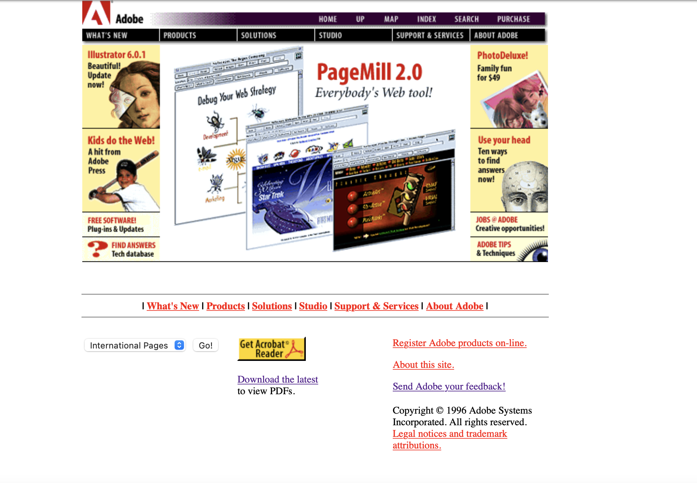
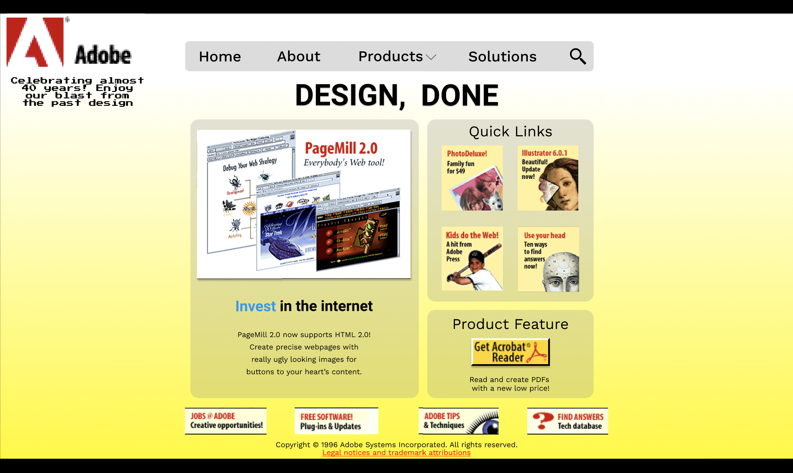

Putting it All Together:

Old Adobe Website Redesign
Project Owner
In this project I redesigned an October 1996 Adobe website
accessed through the wayback machine.
I was to modernize it, but use the
same information and images that were on the website at the time.
Class Project
October 2021
Figma
Original Website:
Problem:
Besides being outdated, the website has redundancies in the links on the page, and the organization of the content displayed is not ideal.
Solution:
Using Figma, I modernized the page, removed the redundant links, and reorganized the page while keeping the original content.
Desktop Page:
In addition to the previous requirements, I put the main content in a 1024px container. With less content, it conveniently fit into a single, non-scrolling page.
After this, I rescaled the site to fit in a smartphone screen of 360px by 640px. Aside from moving the main containers into a single column, I distilled the main page links into a hamburger menu.
The landing of the mobile site is displayed here, along with the full layout of the site. The line across in the middle image marks the screen cutoff.
Putting it All Together:
To finalize the project, I placed the images in mockups (mockup image credits go to mockupgenerator.com) and combined the images into a scene. The old site has been framed for nostalgia.